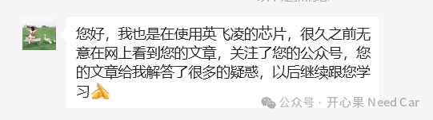
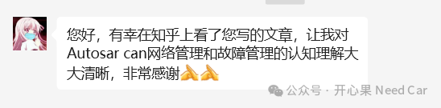
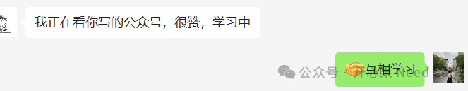

开心果 Need Car · 2024-02-06T17:29:00+08:00 · 微信原文
一年，转瞬即逝。"开心果 Need Car"又长了一岁，回顾过去一年，还是有很多想和大家"得吧的"......
首先，给自己一点掌声，也谢谢你们（开心果 Need Car 读者）。给自己一点掌声是因为："开心果 Need Car"在过去的一年里，分享了132篇原创软文，共计16.7万字，超过27.6万次的阅读，影响了5W+的读者。知乎上，虽然已经放缓了更新（最近没有更新），也已经有超过71万次的阅读。如此小众的文章，如此技术细化的文章，能帮助到这么多的人，我有点小骄傲。这些文章属于即插即用的文章，即：开发人员可以直接/间接地获得思路或者原因。有很多读者留言，觉得文章有用，这时，我会觉得自己写得有用。坦诚的讲，我世俗，谈不上什么无私奉献，我只是习惯性的文档化，顺便分享出来我碰到的，思考到的、顿悟的知识......
谢谢你们是因为你们的鼓励和交流，这期间，结识了很多"大佬"，学习了很多，也看到了自己分享所帮助的同学，谢谢你们，谢谢你们的鼓励和肯定。



"开心果 Need Car"除了写技术，对生活，也会喜怒哀乐，也有自己的感受力......
往期精彩回顾